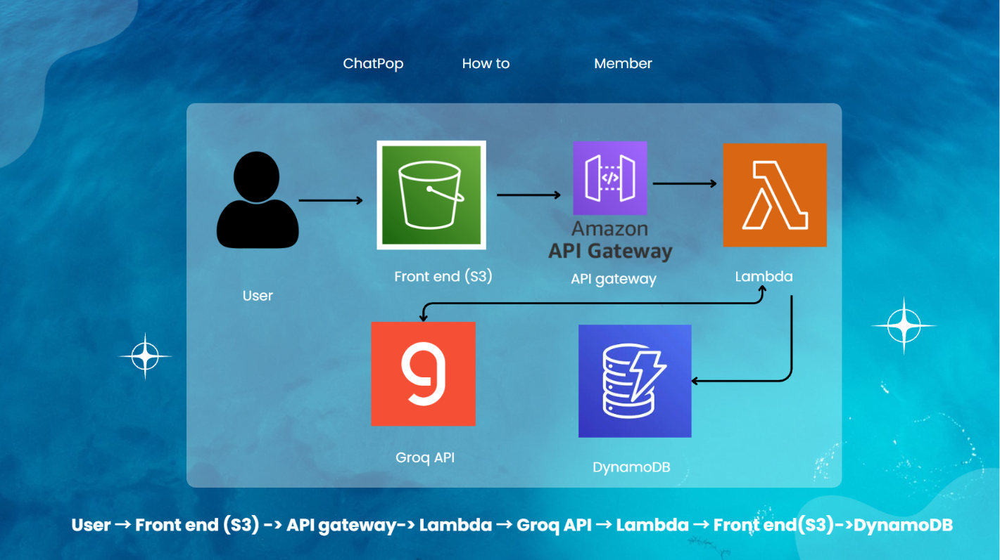
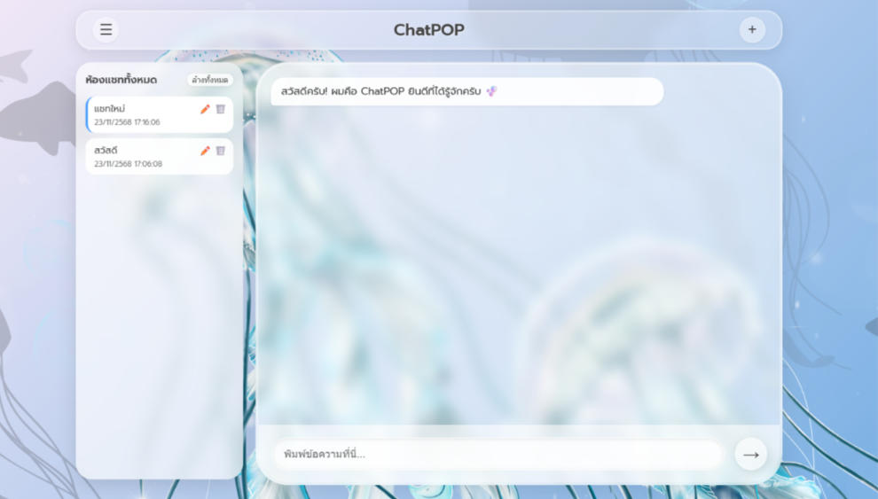

Chat Pop — Serverless AI Chatbot
Chatbot AI แบบ Serverless เต็มรูปแบบบน AWS ตั้งแต่ Front-End จนถึง Backend
Chatbot AI แบบ Serverless เต็มรูปแบบบน AWS ตั้งแต่ Front-End จนถึง Backend

System Architecture Diagram — ผังระบบที่ฉันช่วยวางแผน System Architecture Diagram — I helped plan this system flow
Chat Pop คือ Chatbot AI ที่ทีมพัฒนาแบบ Serverless เต็มรูปแบบบน AWS โดย Front-end ถูก Host ไว้บน Amazon S3 ส่วน Backend ขับเคลื่อนด้วย AWS Lambda และ API Gateway เชื่อมต่อกับ Groq API เพื่อให้การตอบสนองของ AI รวดเร็วแบบ Low-Latency และใช้ Amazon DynamoDB สำหรับจัดเก็บข้อมูล Session การสนทนาแบบ Scalable ในโปรเจกต์นี้ฉันรับผิดชอบด้านการนำเสนอผลงาน (Pitching) และช่วยวางแผนโปรเจกต์ ควบคู่ไปกับทีมที่ดูแลการพัฒนาระบบ
Chat Pop is a fully serverless AI chatbot built by the team on AWS. The front-end is hosted on Amazon S3, while the backend is powered by AWS Lambda and API Gateway. It integrates the Groq API for low-latency AI responses and uses Amazon DynamoDB for scalable chat-session storage. On this project, I was responsible for pitching the work and supporting project planning, alongside the team who handled the system development.
สนใจพูดคุยเกี่ยวกับโปรเจกต์นี้เพิ่มเติม?
ติดต่อฉัน